Como receber convites, fazer o check-in dos passageiros, enviar o relatório e acompanhar seus pagamentos pela Área do Guia.
Acesse em sistema.645turismo.com.brVersão de outubro de 2026
Manual do Guia
CONTEÚDOO que você encontra aqui
Cada capítulo explica uma tela, com a imagem dela no celular. Leia o capítulo 1 no primeiro dia; os outros servem de consulta.
01Antes de começar
02Primeiro acesso e cadastro
03Tela Hoje
04Convites e viagens
05Lista de passageiros
06Mapa do carro
07Relatório da viagem
08Disponibilidade (Agenda)
09Ganhos e nota fiscal
10Perfil
11Ajuda e chamados
12Problemas comuns
Manual do Guia
CAPÍTULO 01Antes de começar
A Área do Guia funciona no navegador do celular, sem aplicativo para instalar. Você entra com seu CPF e sua senha.
Endereço
Acesse sistema.645turismo.com.br. Para abrir mais rápido, use a opção do navegador "Adicionar à tela inicial": o atalho fica junto dos seus aplicativos.
Menu de baixo
Depois de entrar, a barra no rodapé leva a todas as telas:
Botão
Para que serve
Hoje
Próximo trabalho, pendências e recados da 645
Viagens
Convites, viagens confirmadas e realizadas
Agenda
Dias em que você pode ou não trabalhar
Ganhos
Valores, nota fiscal e pagamentos
Mais
Perfil, Ajuda e Sair
Seu código de guiaSão os 3 primeiros e os 3 últimos números do seu CPF. Ele aparece no topo da tela e identifica você na equipe.
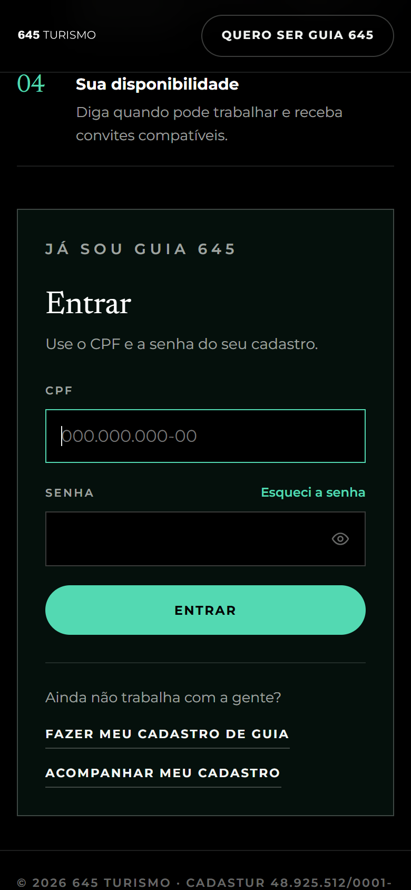
Tela de entrada
Manual do Guia
CAPÍTULO 02Primeiro acesso e cadastro
Há dois caminhos: você mesmo se cadastra, ou a equipe da 645 cria seu pré-cadastro e manda uma senha temporária por e-mail.
Se você recebeu o e-mail da 645
Abra o e-mail "Seu acesso à Área do Guia da 645 Turismo". Ele traz a senha temporária, válida por 7 dias.
Entre com seu CPF e a senha temporária.
Crie a sua senha (pelo menos 8 caracteres, com letras e números) e toque em Salvar senha e continuar.
Complete o cadastro: a equipe já preencheu parte dos dados, você confere e completa o resto.
Senha temporária vencida?Use "Esqueci a senha" na tela de entrada ou peça um novo acesso à equipe.
Se você vai se cadastrar sozinho
Na tela de entrada, toque em Quero ser guia 645 e siga as etapas. Dá para parar e continuar depois no mesmo aparelho.
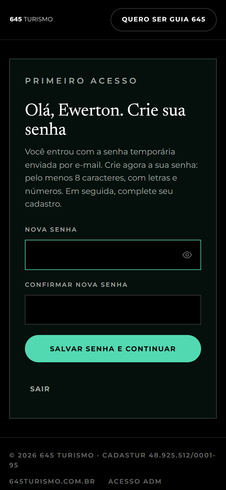
Criação da senha no primeiro acesso
As etapas do cadastro
Etapa
O que pede
Quem é você
Nome, nascimento, celular, e-mail, endereço e uma foto de rosto
Sua atuação
Funções, idiomas, regiões e os dados do Cadastur (obrigatório para a função Guia de Turismo)
Recebimento
CNPJ para a nota fiscal e chave PIX
Acesso
Senha (só no cadastro feito por você) e aceite dos termos
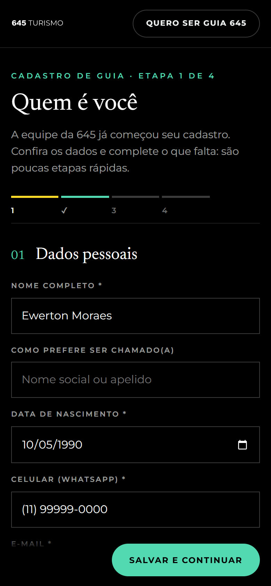
Etapa 1 do cadastro
Não emite nota fiscal?
Na etapa Recebimento, marque "Não emito nota fiscal". Os campos de CNPJ somem e você recebe só pelo PIX.
ImportanteAlguns trabalhos exigem nota fiscal. Sem emitir nota, você pode não ser selecionado para eles.
Ao concluir, o cadastro fica em análise. A equipe confere e avisa por e-mail. Você pode acompanhar em "Acompanhar meu cadastro", na tela de entrada.
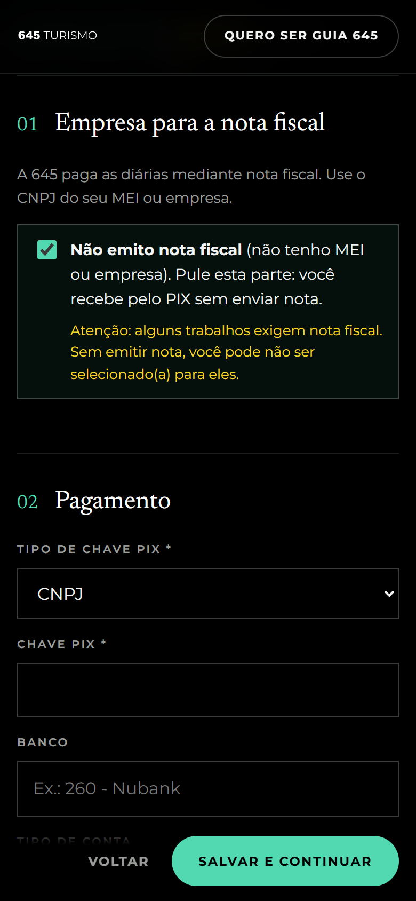
Opção "Não emito nota fiscal"
Manual do Guia
CAPÍTULO 03Tela Hoje
É a primeira tela depois de entrar. Mostra o que importa no dia, sem precisar procurar.
Próximo trabalho: data, código da viagem, trajeto, horário e local de apresentação. Toque em Ver briefing para abrir os detalhes.
Para resolver: convites esperando resposta, relatórios e notas fiscais a enviar, respostas da equipe. O número mostra quantos são; toque na linha para resolver.
Neste mês: quantas diárias você fez e quanto tem a receber.
Próximos dias: os trabalhos já confirmados.
Recados da 645: avisos da equipe para todos os guias.
DicaComece o dia pela tela Hoje: se houver algo em "Para resolver", é ali que aparece.
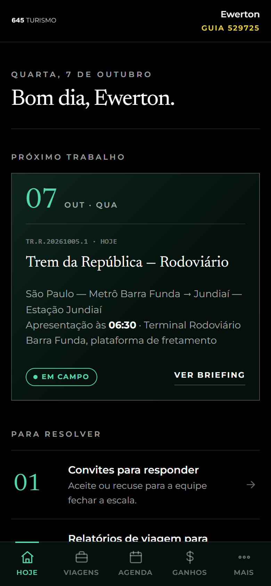
Tela Hoje
Manual do Guia
CAPÍTULO 04Convites e viagens
A equipe convida você para trabalhar. Você recebe um e-mail e o convite aparece em Viagens. O valor da diária vem só no e-mail.
Responder um convite
Toque em Viagens e abra a aba Convites.
Toque no convite para ver os dias, horários e o briefing.
Toque em Aceitar convite ou em Não posso ir.
Responda o quanto antes: a equipe fecha a escala com quem confirma primeiro.
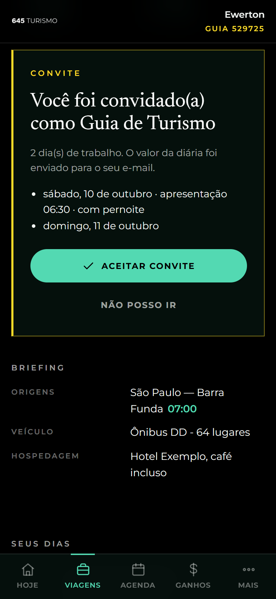
Convite aberto
As três abas
Convites: aguardando sua resposta.
Confirmadas: trabalhos que você aceitou.
Realizadas: trabalhos que já aconteceram.
Às vezes não há conviteQuando já estava combinado, a equipe pode escalar você direto. A viagem aparece já confirmada e você recebe um e-mail avisando.
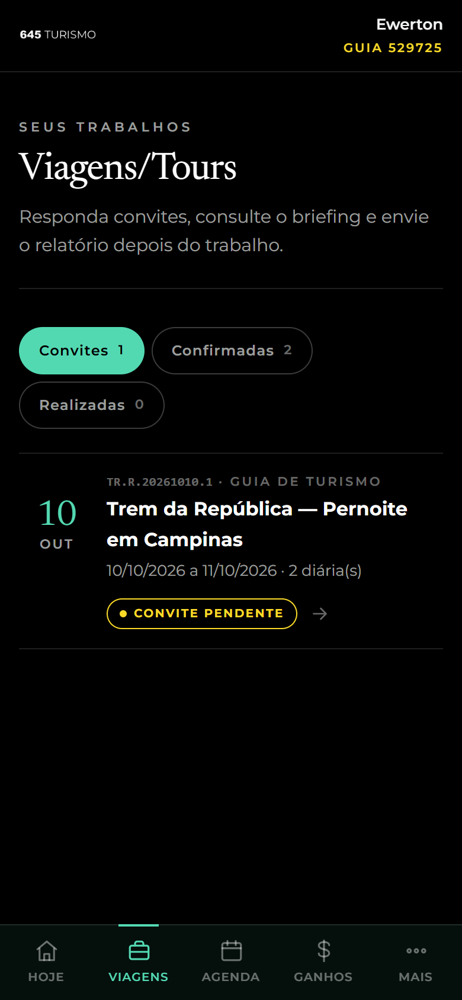
Lista de viagens
O briefing da viagem
Abra uma viagem confirmada para ver tudo o que você precisa no dia:
Horários de apresentação, saída, saída do destino e chegada prevista.
Origens (pontos de embarque, com horário de cada um), ponto de encontro e link do mapa.
Veículo, hospedagem (se tiver pernoite), uniforme, alimentação, roteiro e regras.
Contatos: coordenação, motorista, guia local e outros.
No topo fica o atalho Lista de passageiros e mapa do carro, assunto dos próximos capítulos.
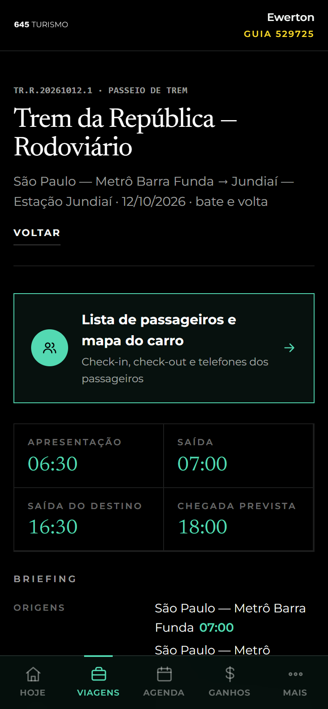
Briefing de uma viagem confirmada
Manual do Guia
CAPÍTULO 05Lista de passageiros
A lista é enviada pela equipe e se atualiza sozinha a cada poucos segundos. Se outro guia faz um check-in, você vê na hora.
No topo da lista
Contadores: check-ins feitos, check-outs, no-shows e ajustes feitos pelo guia.
Busca: por nome, documento, venda (reserva) ou poltrona.
Filtro: todos, faltam check-in, com check-in, com check-out, no-show ou ajustados.
Abas Lista e Mapa do carro.
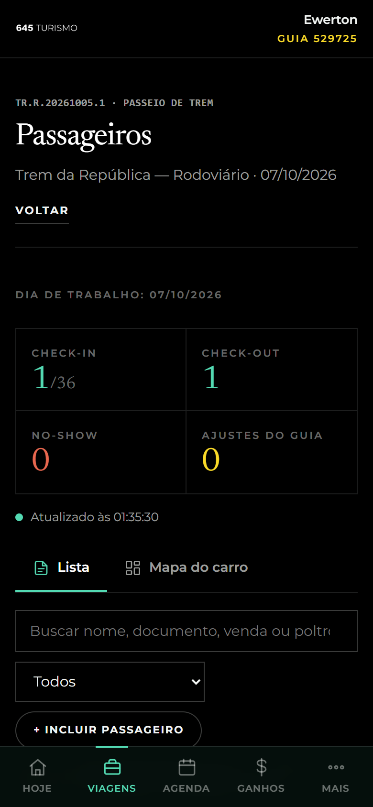
Contadores, busca e filtro
Marcar cada passageiro
Botão
Quando usar
Check-in
O passageiro embarcou
Check-out
Desembarcou no fim (só depois do check-in)
No-show
Não compareceu (só sem check-in)
Errou? Toque de novo no botão marcado para desfazer. Se o passageiro marcado como no-show aparecer, faça o check-in: o no-show sai sozinho.
Só no dia do trabalhoOs botões ficam ativos no dia da viagem e no dia seguinte (para viagens que terminam de madrugada). Sem sinal? Pode marcar mesmo assim: o sistema guarda e envia quando a internet voltar.
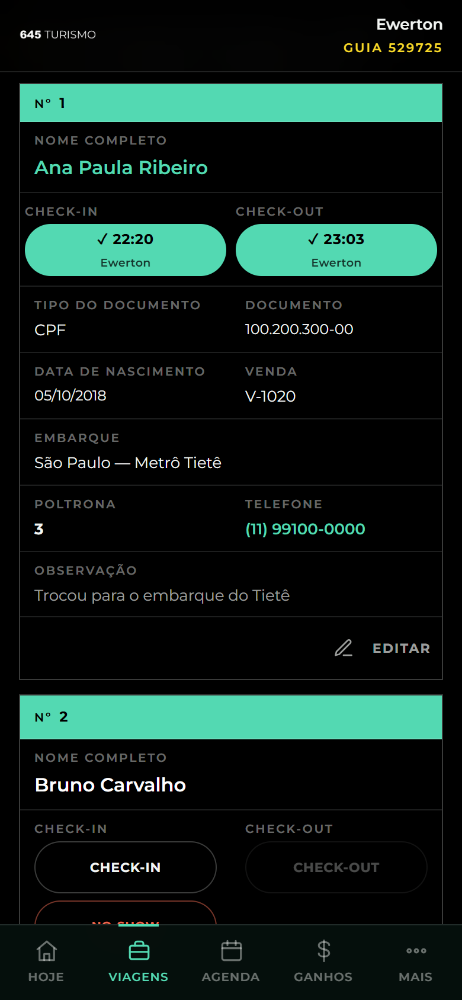
Cada passageiro em um cartão
Corrigir dados de um passageiro
Toque em Editar no cartão do passageiro.
Corrija o que precisar e toque em Salvar.
A alteração aparece em amarelo, o dado original fica guardado e a coordenação recebe um e-mail.
Incluir um passageiro
Troca de última hora? Toque em + Incluir passageiro, preencha e salve. Ele também aparece em amarelo.
Regras que o sistema confere
Embarque: só os locais cadastrados na viagem, escolhidos na lista.
Poltrona: precisa existir no veículo, sem bloqueio e sem outra pessoa. Só a criança de colo (campo "Tipo de passageiro") divide a poltrona com um adulto.
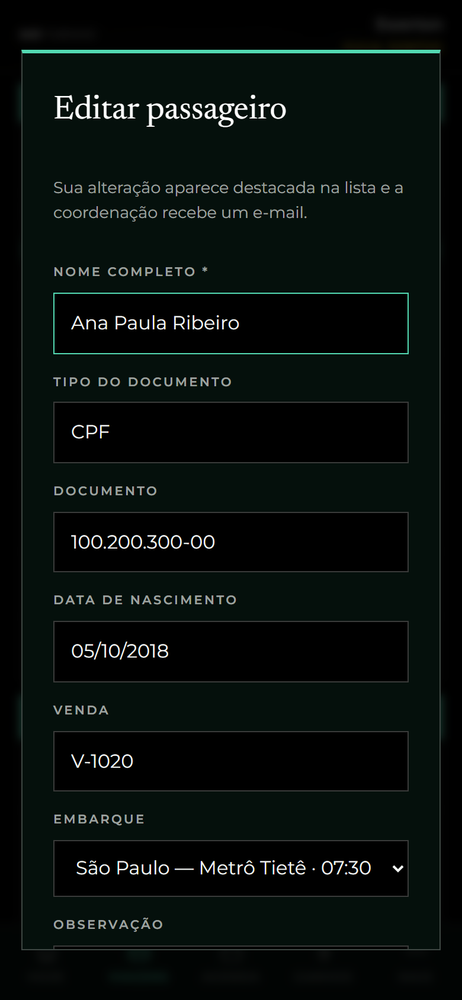
Edição de um passageiro
Manual do Guia
CAPÍTULO 06Mapa do carro
A aba Mapa do carro mostra o veículo visto de cima, com cada poltrona. É o jeito mais rápido de achar um passageiro no embarque.
As cores das poltronas
Cor
Significado
Contorno escuro
Livre
Verde-claro
Reservada
Menta cheio
Check-in feito
Vermelho riscado
No-show
Amarelo piscando
Mesma reserva da poltrona escolhida
Listrada
Bloqueada pela coordenação
Borda vermelha
Poltrona com problema (duplicada ou bloqueada com passageiro)
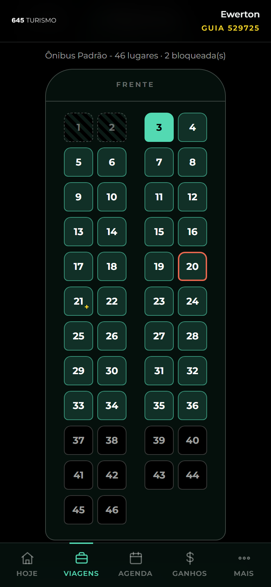
Mapa do carro
Tocar numa poltrona
Mostra o passageiro e, em destaque, o local de embarque com o horário.
WhatsApp abre a conversa com o passageiro no WhatsApp.
As outras poltronas da mesma reserva piscam em amarelo; o botão Check-in da reserva inteira embarca o grupo de uma vez.
Check-in, check-out, no-show e editar também funcionam aqui.
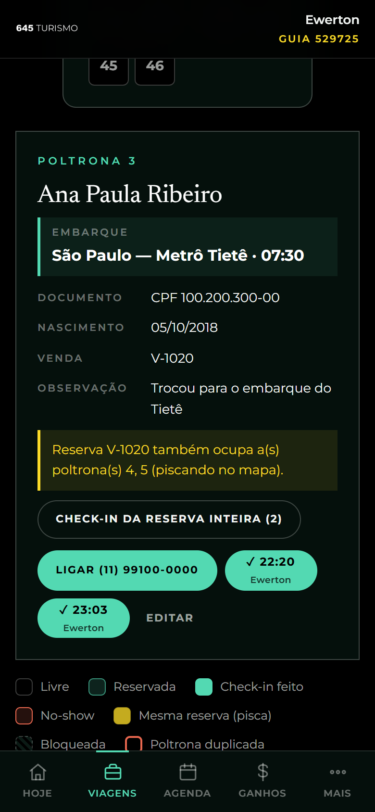
Poltrona escolhida
Manual do Guia
CAPÍTULO 07Relatório da viagem
Depois do trabalho, envie um relatório curto. É ele que libera a etapa de pagamento.
Abra a viagem em Viagens → Realizadas (ou pelo aviso em "Para resolver").
No campo Como foi o trabalho?, conte: pontualidade, roteiro, ocorrências (atrasos, saúde, perdas) e o retorno dos passageiros.
Informe quantos passageiros você atendeu.
Toque em Enviar relatório.
Você pode ajustar o texto até a equipe conferir. Se a equipe pedir ajustes, o motivo aparece em vermelho na viagem.
Depois do relatórioQuem emite nota fiscal passa para a etapa da nota (capítulo 9). Quem não emite vai direto para o pagamento.
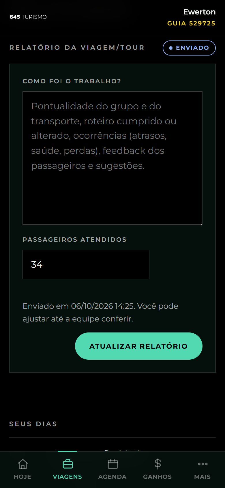
Relatório da viagem
Manual do Guia
CAPÍTULO 08Disponibilidade (Agenda)
Diga quando pode trabalhar. A equipe vê sua agenda na hora de escalar, e você recebe convites que combinam com ela.
Toque em Agenda no menu de baixo.
Escolha o dia (e, se quiser, uma data final para marcar um período).
Marque Disponível ou Indisponível e o período: dia todo, manhã, tarde ou noite.
Para repetir, use Só em alguns dias da semana (por exemplo, todo sábado e domingo).
Toque em Salvar marcação.
No calendário: verde-escuro é disponível, contorno vermelho é indisponível, menta são trabalhos confirmados e amarelo são convites. Toque numa marcação para removê-la.
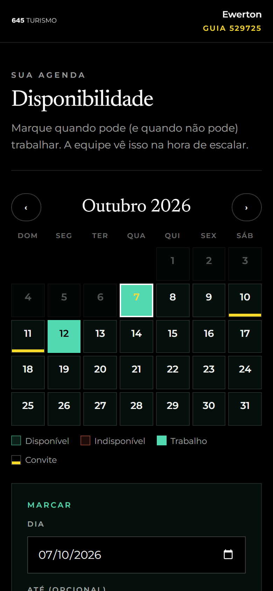
Agenda do mês
Manual do Guia
CAPÍTULO 09Ganhos e nota fiscal
Em Ganhos você acompanha cada viagem, do convite aceito até o pagamento. Os valores são só seus: nenhum outro guia vê.
Filtro por ano no topo (ano atual, anterior e os anos em que trabalhou).
Resumo: recebido no ano, a receber, previsto (trabalhos aceitos que ainda vão acontecer) e número de diárias.
O caminho do pagamento
1Agendada2Aguardando relatório3Envie a nota4NF em conferência5Pagamento programado6Pago
Quem não emite nota fiscal pula as etapas 3 e 4.
Enviar a nota fiscal
Na viagem com Envie a nota fiscal, confira para quem emitir, o valor e o prazo.
Informe o número e o valor da nota e anexe o arquivo (PDF ou foto).
Toque em Enviar nota fiscal.
Se a nota voltar, o motivo aparece em vermelho; corrija e envie de novo. Quando o pagamento é feito, aparecem a data e o comprovante.
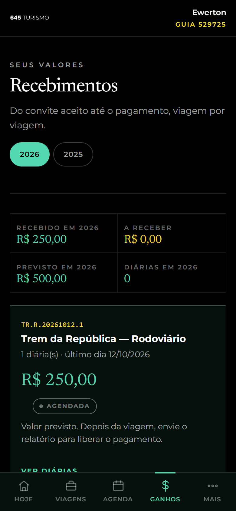
Ganhos
Manual do Guia
CAPÍTULO 10Perfil
Mantenha seus dados em dia: é com eles que a equipe monta as escalas e faz os pagamentos. Abra em Mais → Perfil.
Aba
O que você muda
Dados
Nome, como prefere ser chamado, contato, endereço e foto
Atuação
Funções, idiomas, regiões, especialidades e Cadastur
Recebimento
CNPJ (ou "Não emito nota fiscal") e PIX
Senha
Troca da senha de acesso
No topo aparecem seu código, o CPF parcialmente escondido e a situação do cadastro.
Cadastro com pendênciaSe a equipe pedir uma correção, o motivo aparece no Perfil. Corrija e toque em "Já corrigi, enviar para análise".
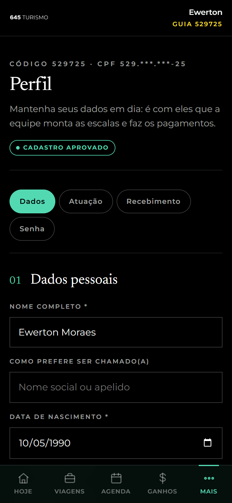
Perfil
Manual do Guia
CAPÍTULO 11Ajuda e chamados
Em Mais → Ajuda você tira dúvidas e fala com a equipe.
Dúvidas: perguntas frequentes com busca, guia prático e vídeos.
Chamados: suas conversas com a equipe.
Contatos: telefones e e-mails da 645.
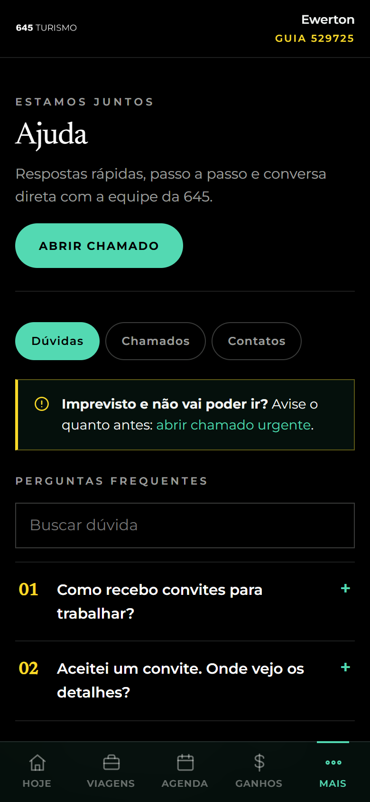
Ajuda
Abrir um chamado
Toque em Abrir chamado.
Escolha o assunto e, se for o caso, a viagem.
Escreva o título e a mensagem; anexe foto ou PDF se ajudar.
Toque em Enviar chamado. A resposta aparece em "Para resolver", na tela Hoje.
Imprevisto e não vai poder ir?Use "abrir chamado urgente" e marque "É urgente". A equipe é avisada na hora.
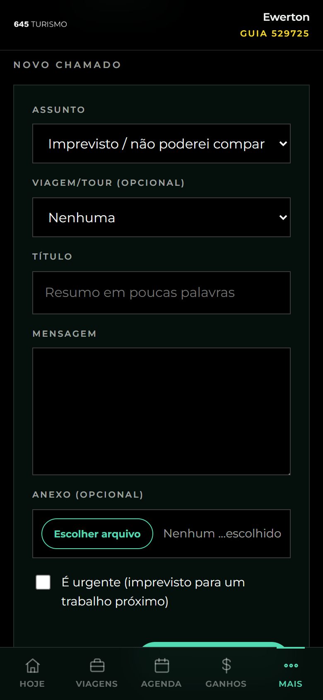
Novo chamado
Manual do Guia
CAPÍTULO 12Problemas comuns
As situações mais frequentes e o que fazer em cada uma.
Situação
O que fazer
Esqueci minha senha
Na tela de entrada, toque em "Esqueci a senha" e informe o CPF. O link chega no e-mail do cadastro e vale por 1 hora.
A senha temporária não funciona
Ela vale 7 dias. Vencida, use "Esqueci a senha" ou peça um novo acesso à equipe.
Os botões de check-in estão apagados
Eles só funcionam no dia do trabalho e no dia seguinte.
Estou sem internet no embarque
Marque normalmente. As marcações ficam guardadas no celular e são enviadas quando o sinal voltar.
O sistema não aceita a poltrona
A poltrona está bloqueada, não existe no veículo ou já tem passageiro. Só criança de colo divide poltrona.
O embarque do passageiro não está na lista
Só aparecem os locais cadastrados na viagem. Fale com a coordenação para incluir um novo ponto.
Não vejo a lista de passageiros
A lista abre depois que você confirma presença na viagem.
Não sei o valor da diária
Ele vem no e-mail do convite. Depois de aceito, aparece em Ganhos.
Não vou poder ir a um trabalho
Abra um chamado urgente em Ajuda o quanto antes.
Dúvidas sobre este manual? Abra um chamado em Ajuda. sistema.645turismo.com.br